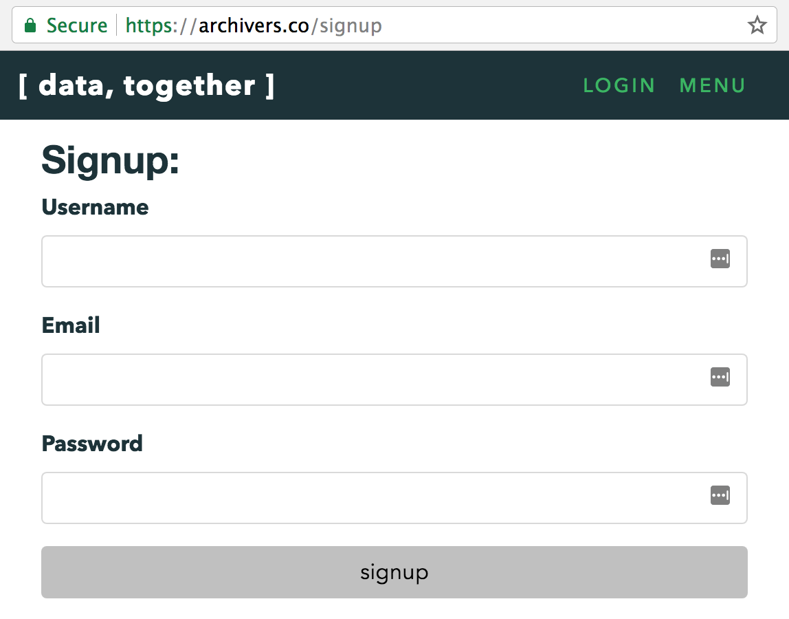
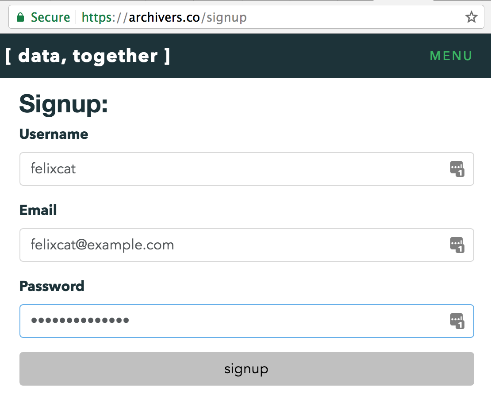
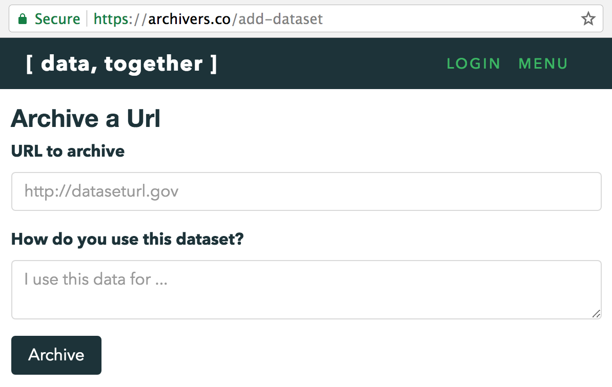

Tutorial: Add a Dataset to Data Together
Note: This tutorial is a work in progress. Please add your feedback to datatogether/learning!
Prerequisites
- You care about a dataset that exists on the web
Learning Objectives
After going through this tutorial you will know how to:
- Add a dataset to Data Together for harvesting
- Create an account on Data Together
- Explain the difference between adding, harvesting, and storing datasets with Data Together
- Describe how Data Together helps groups to steward data they care about
Key Concepts
- Public Record
- Data Together Nodes
- Distributed Data Stewardship
Lessons
Add an Important Dataset
Step 1. Get information about a dataset
Before you start you'll want to know a little bit about the dataset you would like to archive on Data Together. At a minimum this should include the name and web address or URL where the dataset can be accessed.
An example would be EPA's National Greenhouse Gas Emission Inventory, currently located at https://catalog.data.gov/dataset/national-greenhouse-gas-emission-inventory.
Step 2. Register on Data Together
To register on Data Together, visit https://archivers.co/signup
 
Step 3. Archive a dataset on Data Together
- Copy the URL of the dataset you would like to archive
- Visit the Data Together Add a Dataset page
- Paste the URL into the "URL to archive" text box
- Type a simple description in your own words into the "How do you use this dataset?" text box
- Click the "Archive" button
- Success! You archived a dataset :)

Step 4. Review the actions you can take on datasets
Adding, harvesting, and storing are all verbs used in Data Together to describe actions you can preform on datasets
- Adding a dataset means [...]
- Harvesting a dataset means [...]
- Storing a dataset means [...]
Step 5. Explore the concepts of data stewardship that underly Data Together
Data Together helps groups steward data they care about by [...]
Next Steps
More tutorials to follow, including how to:
- Replicate a dataset you care about onto hardware that you control
- Browse datasets that have been backed up
Check back soon!